User guide
How to install Dawnhub Advertiser Tools, where its tools appear on Dawnhub, and how each of them works.
1. Getting started
You need Google Chrome on a computer and a Dawnhub account that you already use to book buyers.
- Open the downloads page and choose Chrome Web Store, then Add to Chrome.
- Chrome asks to let the extension read and change your data on
hub.dawn-boosting.com, and on Dawn'sdevhubtest site. That's how it adds its tools to Dawnhub's pages, and those are the only sites it runs on. - Reload any Dawnhub tab you already had open.
Where things appear
The tools appear directly on Dawnhub's raids list:

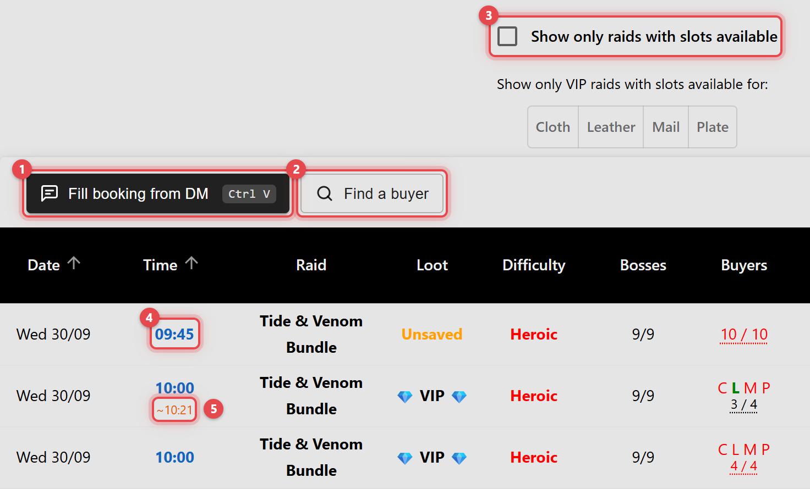
On a raid's own page, the extension adds only Fill booking from DM, and pasting a screenshot with Ctrl+V works there too.
The extension's icon in Chrome's toolbar opens a short popup with links back to this guide:

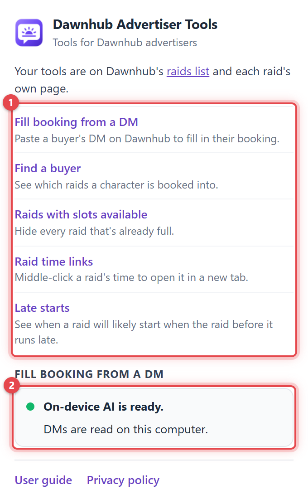
On macOS, use ⌘ wherever this guide says Ctrl.
2. Fill booking from a DM
Paste a message from a buyer, such as a Discord or Battle.net DM or an in-game whisper, as a screenshot or as copied text. The extension picks the raid they're asking about, reads their Name-Realm and any price they mention, and fills in the booking for you to check and submit.
What it needs
This is the one tool that needs more than Chrome itself: it reads DMs with Chrome's built-in AI (Gemini Nano, through Chrome's Prompt API).
- Desktop Chrome with built-in AI. Chrome on phones doesn't have it, and whether a computer qualifies is Chrome's decision. At the time of writing, Google asks for Windows 10 or 11, macOS 13 or later, Linux, or a Chromebook Plus. It also needs about 22 GB of free disk space and either a graphics card with more than 4 GB of memory or 16 GB of RAM. Google's current requirements have the details.
- A one-time model download. Chrome downloads the AI model the first time it's needed. The extension's popup shows whether it's ready, and Download now starts it early. You can close the popup; the download carries on.

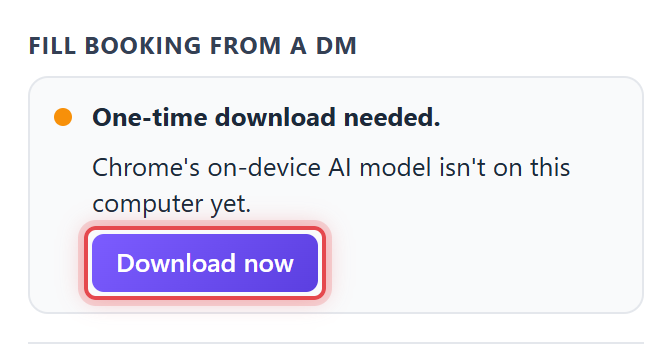
To check yourself, open chrome://on-device-internals in a new tab. Without the AI, this tool still works as a quick booking form: pick the raid, type the Name-Realm and Pot, and it opens the raid and fills them in.
Step by step
- Open Dawnhub's raids list and wait for the raids to load. The DM is matched against the raids listed there, so pick the dates and region you sell for.
- Take a screenshot of the conversation, wherever it happened (on Windows, Win+Shift+S copies it straight to the clipboard). Or, where the app allows it, select the buyer's messages and copy them with Ctrl+C.
- Back on Dawnhub, press Ctrl+V anywhere on the page to paste the screenshot. To paste copied text, first click Fill booking from DM above the table, then paste into the window that opens.
- Wait a moment while it reads. Each booking's Raid, Name-Realm and Pot fill in as soon as it's done, plus the Bosses on a curve raid.
- Check the fields, then choose Open & fill on the booking. The raid opens in a new tab with its booking form filled in, and the window stays open for the next booking.
- In the new tab, check the booking form, including the class Dawnhub's own search filled in, and submit it.

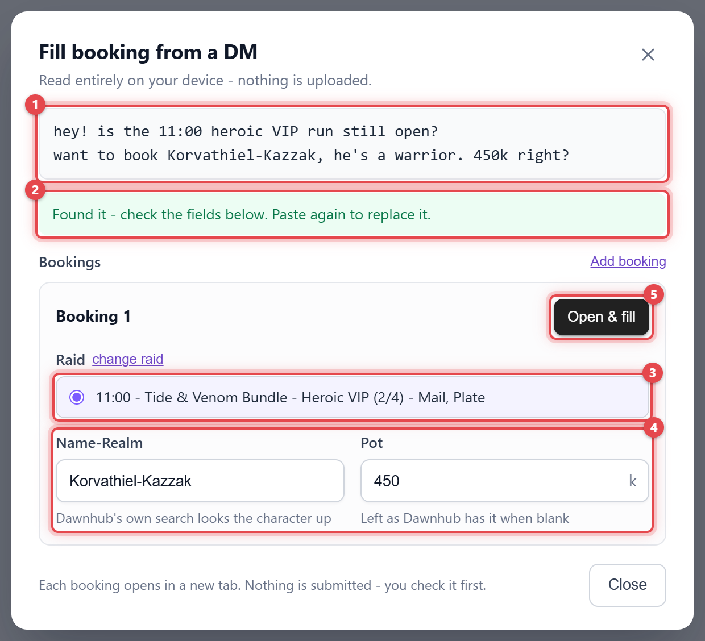
Pasting a DM
Copied text is more accurate than a screenshot. A screenshot first has to be turned back into text, and that can misread a stylized display name or a name squeezed between timestamps. Screenshots are for when you only have an image.
- Anywhere on the raids list or a raid's own page, a pasted screenshot opens the window straight away. Pasted text is left alone there, so pasting into Dawnhub's own fields keeps working as normal.
- Inside the window, both screenshots and text are read, and you can also drag an image or text onto it. Pasting again reads the new DM into the bookings you haven't opened yet. It picks their raid again when the new DM matches one, unless you picked it yourself, and fills in Name-Realm and Pot only where they're still empty, so clear a field first if the new DM should replace it.
- For an accurate read, crop a screenshot to the conversation and include the message where the buyer writes their character. Only English conversations are supported.

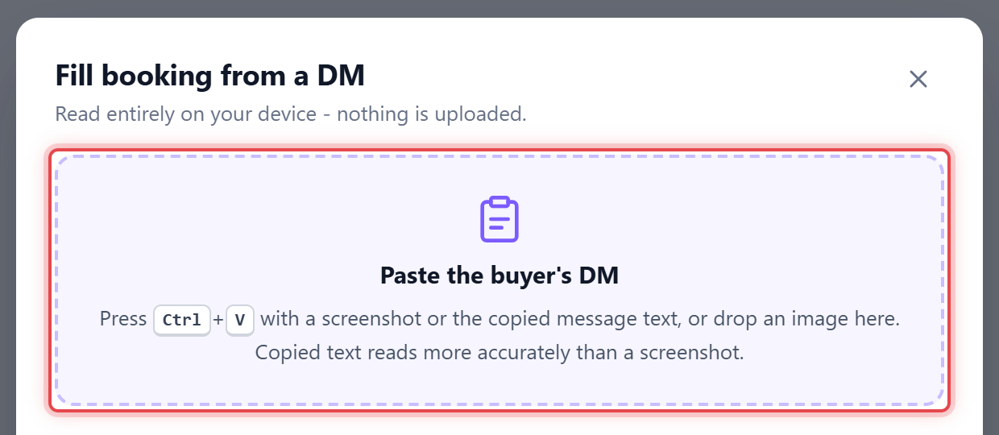
| Read from the DM | Used for |
|---|---|
| Raid time, name, difficulty, loot type | Picking the raid. The chat's own message timestamps are ignored. Naming an armor type ("mail at 21:30?") counts as asking for VIP. |
| Curve boss | Which boss of a curve raid to tick, including the shorthand buyers use ("Coiled", "Ula"), or both. Every boss stays ticked when the DM names none. |
| Class or armor type | Skipping any VIP raid that already sold the buyer's armor type, and marking it in the raid list if you pick one anyway. |
| Price | The Pot field, in thousands of gold: "300k" becomes 300 and "1.5m" becomes 1500. Only when the DM names a price. |
| Name-Realm | The Name-Realm field, only when the buyer clearly wrote it out. Never taken from the sender's display name. |
Several bookings in one DM
Buyers often book more than one character in a single message, for example two of their own, or a character on each boss of a curve raid. Each character becomes a booking of its own in the window, with its own raid, bosses, Name-Realm and Pot.
- What the DM says once about the run, such as the time or the price, applies to every character in it.
- Open each booking with its own Open & fill. Opened bookings are marked, so it's clear which are left.
- Use Add booking for a character the reading missed, and Remove for one it read by mistake.
- Pasting the next DM clears out the bookings you've already opened, and keeps any you haven't.

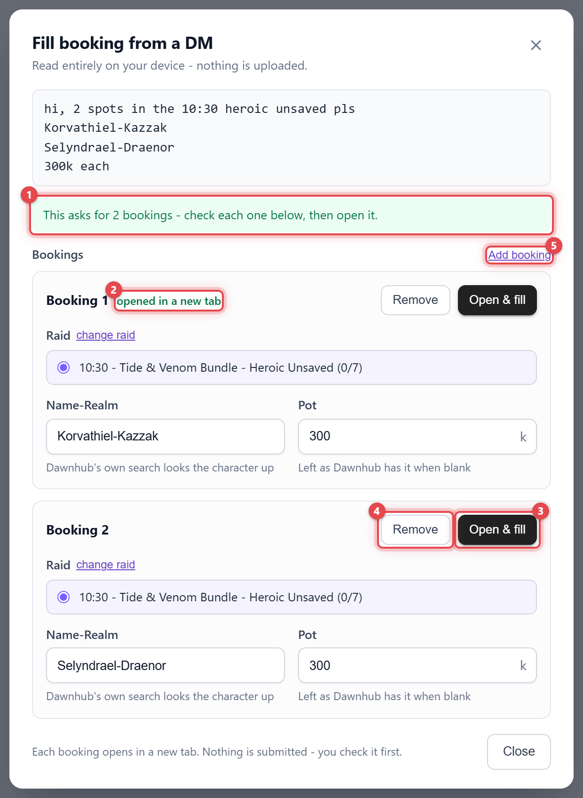
How the raid is picked
The AI only reads plain facts from the DM. It never chooses the raid. The extension then scores every raid you can still sell into against those facts:
| Clue | Weight |
|---|---|
| Start time matches | 100 |
| Raid name matches | 25 |
| Difficulty matches | 20 |
| Loot type matches (or an armor type on a VIP raid) | 15 |
| Starts soon | up to 15, for a raid starting now, fading to 0 three hours out |
- A raid is only picked automatically with a score of at least 60. A matching time is enough on its own. Without a time, the raid name, difficulty and loot type together are enough. On a tie, the raid starting sooner wins.
- Only active raids with a free slot are considered. The raid list starts with those beginning within three hours; show all raids shows the rest of your list. Once a booking has a raid, only that raid is shown; change raid opens the list again.
- On a raid's own page, that raid is selected from the start. A DM that clearly names another raid replaces it, but a raid you picked yourself is never replaced.
- A price in the DM never affects which raid is picked.

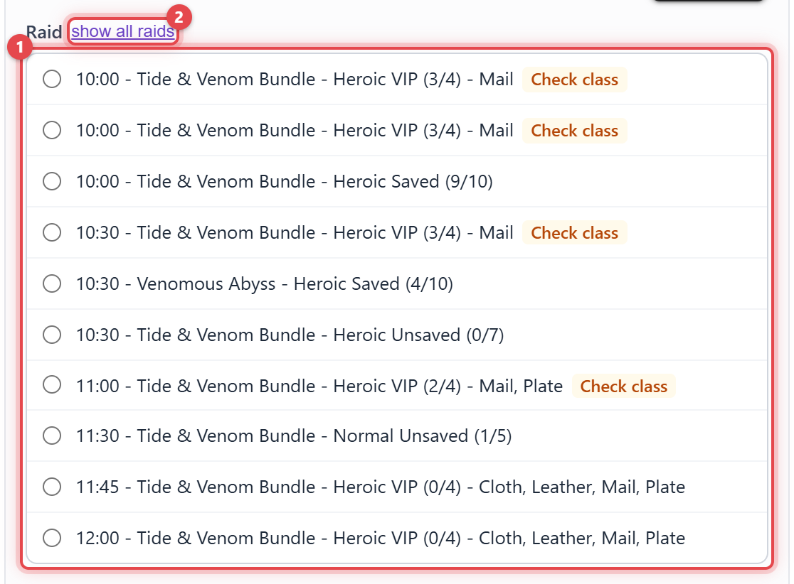
Checking and filling
Fields fill in automatically only while they're empty, and a small spinner next to a field means it's still being read. Check the Name-Realm spelling especially after a screenshot. Pot is a number in thousands of gold; leave it blank to keep whatever Dawnhub puts there. The raid list shows how full each raid is, and marks a sold-out curve boss in red.

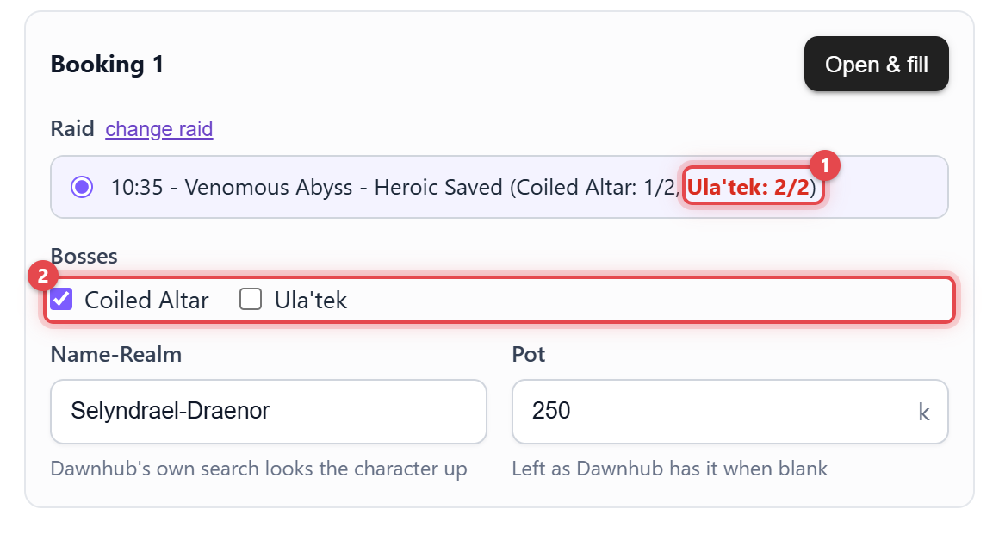
Raids that may not suit the buyer are marked in each booking's raid list; hover a mark for the reason. Room for 1 of 2 means the raid can't take every character in the window — on a curve raid each boss is counted on its own, so only the bosses those characters are booked on are marked (for example Ula'tek full). On a VIP raid, Plate taken means the buyer's armor type is sold already, and two characters of the same armor type can't both go. That goes by the class or armor type the DM names; while it names neither, a VIP raid that has sold any armor type is marked Check class. Marked raids can still be picked.

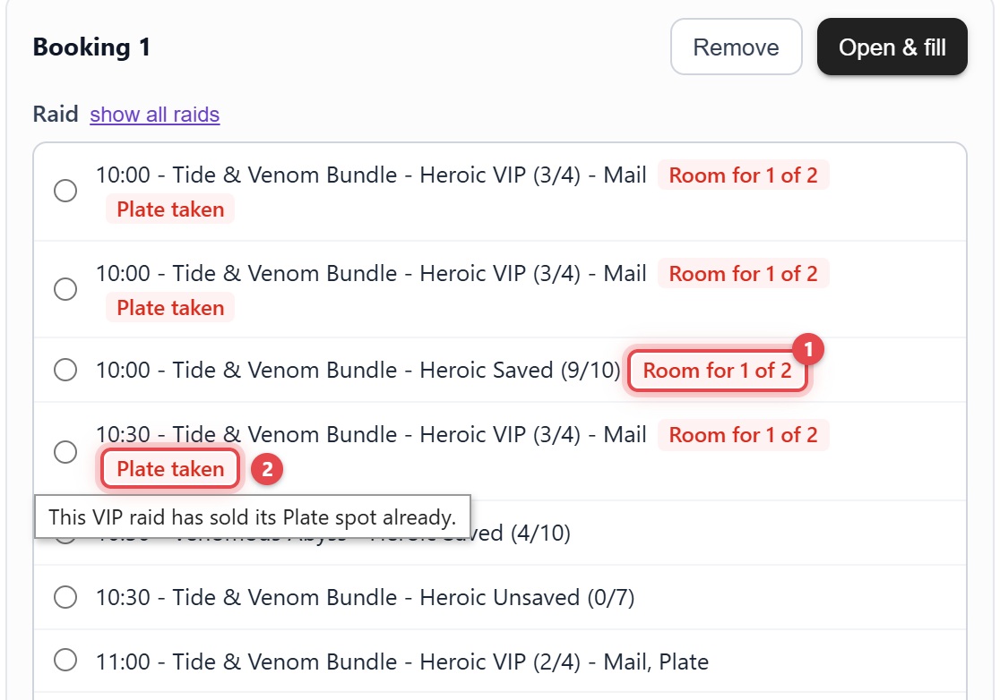
Open & fill opens the raid's booking page in a new tab and fills its form as soon as it appears, even when that raid is already open in this tab, so each booking gets a form of its own.
Only Name-Realm, Pot and, on a curve raid, the Bosses ticked in the window are filled in. The extension then clicks Dawnhub's own magnifying glass next to Name-Realm, so Dawnhub looks the character up and fills in its class. Everything else is left as it is.

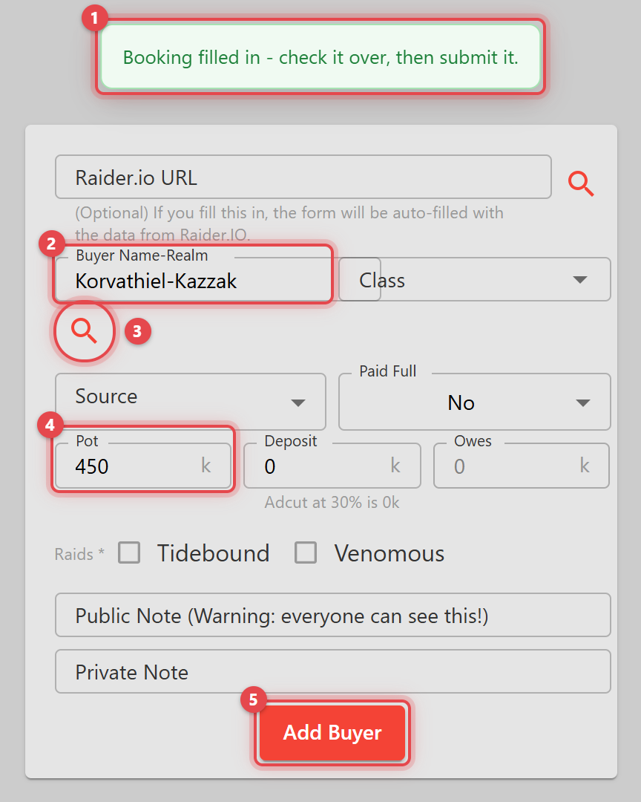
Troubleshooting
"Chrome's on-device AI isn't available in this browser or on this device"
Chrome says your computer can't run its built-in AI, or it's switched off. Check what it needs and chrome://on-device-internals. Organizations can turn the feature off with a Chrome policy. You can still fill the fields in by hand.
It says it's downloading, or the first read takes a long time
The model downloads once, and that can take a while on a slow connection. Start it early from the extension's popup. After that, reading a DM takes a few seconds.
"Open Dawnhub's raids list first"
A DM is matched against the raids list you last viewed in the same tab. Open the raids list, wait for it to load, then paste again. On a raid's own page, that raid is always offered.
"No open raid clearly matches this DM"
Nothing in the DM pointed at one raid clearly enough, usually because no start time was mentioned, or the time isn't on your current list. Pick the raid yourself, or use show all raids. The Name-Realm and Pot it read are kept.
The Name-Realm is wrong or missing
Paste the copied message text instead of a screenshot. That's the most reliable fix.
"Dawnhub's character search didn't respond"
The booking was filled in, but Dawnhub's magnifying glass couldn't be clicked in time. Click it yourself before submitting.
3. Find a buyer
On the raids list, Find a buyer searches every raid in the dates set in Dawnhub's Start Date and End Date filters, on the region and list you're viewing, for a character. Type part of their name-realm to see which raids they're booked into, with their class, the advertiser who booked them, pot, deposit, paid status and source. Each result links to its raid in a new tab, Refresh reloads the bookings, and Close or Esc closes the search. What you see depends on which bookings Dawnhub shows your account.

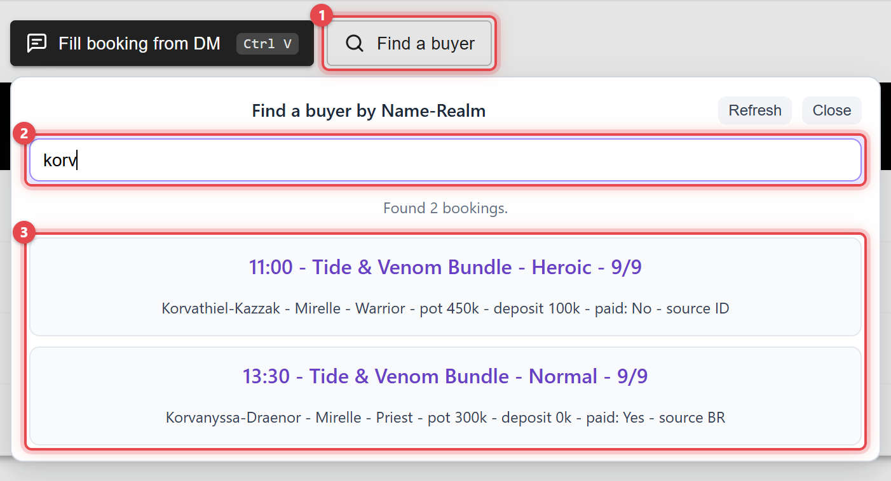
4. Raids with slots available
A Show only raids with slots available tick above Dawnhub's own VIP armor filter hides every raid that's already full, VIP, curve and regular alike. Dawnhub's own filter only covers VIP raids. The tick works alongside Dawnhub's filters and is remembered between visits. On the curve list, which has no VIP filter, it sits next to the extension's buttons instead.

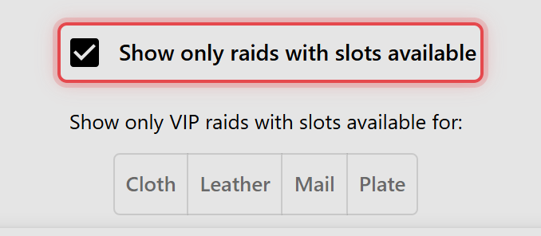
5. Raid time links
Each raid's time on the raids list is a real link. Middle-click it or Ctrl+click it to open the raid in a new tab, or click it as normal to open it in place.

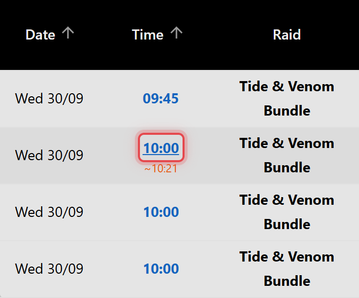
6. Late starts
Leaders run back to back, so when a leader's raid starts late, their next one usually does too. When the leader's raid before, up to 3 hours earlier, is still open past its start or locked late, a small orange time such as ~19:18 under a raid's start time shows when it will likely start. Hover over it to see why, for example 18:30 run locked 18 min late or 18:30 run still open 12 min after start. Less than 3 minutes late counts as on time, and more than 90 minutes as a raid left open by mistake.

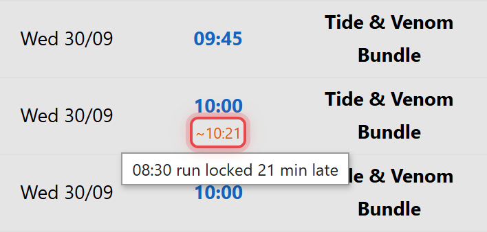
The extension times a lock from Dawnhub's own refreshes of the raids list, every 30 seconds while a raids list is the tab in front, so it only knows the raids that locked while one was. Locks are remembered for a day, and shared between your Dawnhub tabs, so a leader's earlier raid counts even when it was listed on another list.
7. General troubleshooting
The extension's buttons or tick aren't there
Reload the page after installing or updating the extension. Buttons appear above the table on the raids list and on a raid's own page. The slots tick and the raid time links only appear on the raids list.
Something stopped working after Dawnhub changed
The extension works with Dawnhub's pages as they are, so a redesign on Dawnhub's side can break a tool until the extension is updated. Chrome Web Store installs update automatically once a fix is out.
8. Privacy in short
The extension works with the Dawnhub data your account can already see, and talks only to Dawnhub itself. Anything you paste into it, such as a DM screenshot or message, is read on your computer and never sent anywhere. There are no analytics and no servers of its own. Details are in the privacy policy.